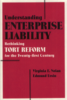

<body bgcolor="#FFFFFF" text="#000000" link="#0000FF" vlink="#CC0000" alink="#CC0000"><center><hr width="350" size="1" align="center" noshade>Historical insights and a fresh perspective on the politics and possibilities for sensible tort reform<hr width="350" size="1" align="center" noshade><p><a href="https://cdcshoppingcart.uchicago.edu/Cart/ChicagoBook.aspx?ISBN=9781566392303&&PRESS=temple" target="_top">Buy this book!</a> | <a href="https://cdcshoppingcart.uchicago.edu/Cart/Cart.aspx?PRESS=temple" target="_top">View Cart</a> | <a href="https://cdcshoppingcart.uchicago.edu/Cart/Cart.aspx?PRESS=temple" target="_top">Check Out</a></p><p></p></center><!--none//--><h1>Understanding Enterprise Liability</h1>
<H2>Rethinking Tort Reform for the Twenty-First Century</H2>
<h3>Virginia Nolan and Edmund Ursin</h3>
<P>cloth 1-56639-230-6 $89.50, Dec 94, <FONT COLOR=#990033>Out of Stock Unavailable</FONT>
<br>Electronic Book 1-43990-764-1 $90.50 <FONT COLOR=#990033>Out of Stock Unavailable</FONT>
<BR> 272 pp
5.5x8.25
</P><p>In recent years critics have assailed the cost, inefficiency, and unfairness of American tort law, including products liability and medical malpractice. Yet victims of accidental injury who look to the tort system for deserved compensation often find it a formidable obstacle. Those who seek to reform tort law find legislatures, particularly the United States Congress, paralyzed by the clash of powerful special interest groups.
<p><I>Understanding Enterprise Liability</I> sheds new light on the raging tort reform debate by challenging its fundamental assumptions. Offering historical insights and fresh perspectives on the politics and possibilities for sensible reform, Virginia Nolan and Edmund Ursin pragmatically assess alternative routes to a workable, balanced, and equitable system of compensation for personal injury. They offer a specific proposal, based on the precedent of strict products liability that incorporates the insights of no-fault compensation plan scholarship to create an enterprise liability doctrine that should appeal to courts and to tort reformers.
<BR>&nbsp;<h2>Contents</h2><P>
<p>Acknowledgments
<p><b>Part I: Enterprise Liability: An Introduction</b>
<br>1. Contemporary Tort Reform and Enterprise Liability
<br>2. Traditional Tort Theory and Enterprise Liability: An Overview
<p><b>Part II: The Compensation Plan Strategy</b>
<br>3. Workers' Compensation Plans and Enterprise Liability
<br>4. Leon Green: Explication and Application
<br>5. The Columbia Plan and Dashed Hopes
<br>6. Renewed Focus on Compensation Plans in the 1950s
<br>7. The Keeton-O'Connell Plan, Legislative Successes, and Proposed Extensions of No-Fault
<br>8. Dashed Hopes (Again) and the Need for Alternatives
<p><b>Part III: The Common Law Strategy</b>
<br>9. Leon Green and the "Tort" Version
<br>10. Karl Llewellyn and the "Sales Law" Version: Strict Products Liability Proposed
<br>11. Perspectives on Courts and Legislatures: The 1930s
<br>12. Increased Focus on the Common Law: The 1940s
<br>13. The Possibility of a Judicially Created Strict Enterprise Liability
<br>14. Strict Products Liability: Recognition and Adoption
<br>15. The Damages Agenda of the 1950s
<br>16. Common Law Successes and Proposed Extensions
<p><b>Part IV: Enterprise Liability in Tort Theory: 1960-1993</b>
<br>17. The Success and Fragmentation of the Theory of Enterprise Liability
<br>18. The Emergence of (Calabresi's) Economic Analysis as an "Ally" of Enterprise Liability
<br>19. The Antagonism Between Calabresi's Economic Analysis and Enterprise Liability
<br>20. The Ascendancy of Economic Analysis and Its Opposition to the Enterprise Liability Agenda
<br>21. Contemporary Tort Theory and the Reinvention of Enterprise Liability
<p><b>Part V: The Contemporary Agenda of Enterprise Liability</b>
<br>22. The Legislative Agenda
<br>23. The Need for Alternatives to Legislation
<br>24. A Common Law Proposal
<p>Notes
<br>Index
</P><BR>&nbsp;<H2>About the Author(s)</H2>
<table><tr><td valign="top"><img src="/tempress/authors/1138_au1.gif" height="90" width="75"></td><td width="100%" valign="middle"><p><b>Virginia E. Nolan</b> is Professor of Law at the University of San Diego Law School.</P></td></tr></table><table><tr><td valign="top"><img src="/tempress/authors/1138_au2.gif" height="90" width="75"></td><td width="100%" valign="middle"><p><b>Edmund Ursin</b> is Professor of Law at the University of San Diego Law School.
<p>Together they have authored numerous law review and popular articles, as well as the California Trial Lawyers Association's amicus brief in <I>Becker v. IRM Corporation</I> that led the California Supreme Court in 1985 to extend the strict products liability theory beyond products to apply to landlords.</P></td></tr></table>
<BR><H2>Subject Categories</H2>
<p><A HREF="/tempress/law.html" TARGET="_top">Law and Criminology</a>
<BR><A HREF="/tempress/history.html" TARGET="_top">History</a>
</p>
<p align="center"><a href="https://cdcshoppingcart.uchicago.edu/Cart/ChicagoBook.aspx?ISBN=9781566392303&&PRESS=temple" target="_top">Buy this book!</a> | <a href="https://cdcshoppingcart.uchicago.edu/Cart/Cart.aspx?PRESS=temple" target="_top">View Cart</a> | <a href="https://cdcshoppingcart.uchicago.edu/Cart/Cart.aspx?PRESS=temple" target="_top">Check Out</a></p><p><font face="Arial" size="1"><a href="copyright.html" onMouseOver="window.status='Web Copyright Policy';return true;" onMouseOut="window.status=''" title="Web Copyright Policy">&copy;</a> 2015 <a href="http://www.temple.edu" target="new" onMouseOver="window.status='Link to Temple University home page';return true;" onMouseOut="window.status=''" title="Link to Temple University home page">Temple University</a>. All Rights Reserved. http://www.temple.edu/tempress/titles/1138_reg.html</font></p>